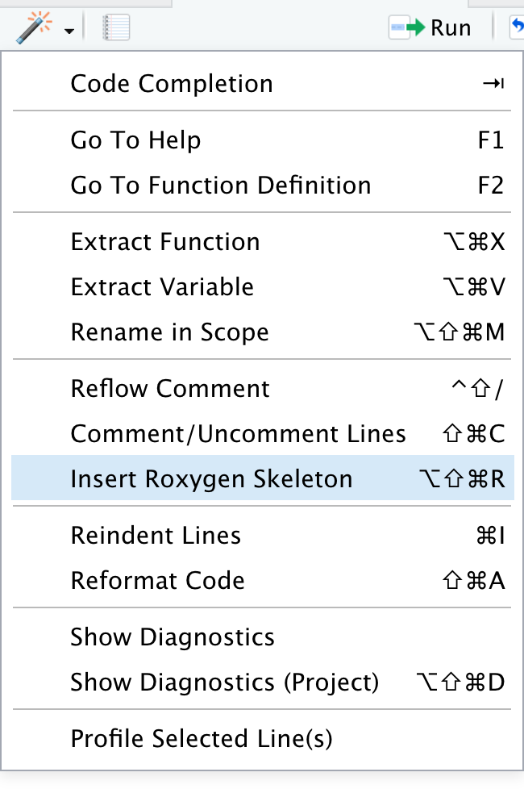
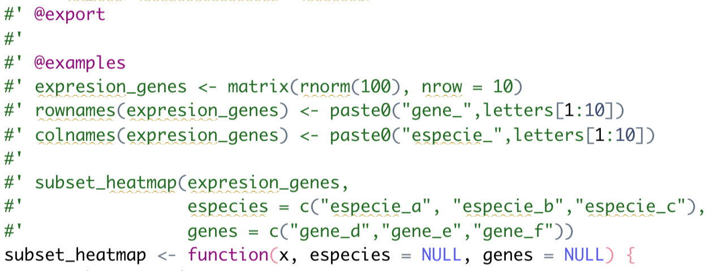

11 Un vistazo a la creación de paquetes de R/Bioconductor
Dra. Joselyn Chávez
04 de agosto de 2022
11.1 Diapositivas
Material basado en - “R packages” by Hadley Wickham
11.2 Recapitulemos
- Revisar si podemos usar el nombre del paquete
available::available("pkgMetagenomica")- Crear la estructura inicial del paquete
usethis::create_package("pkgMetagenomica")- Podemos agregar la estructura de biocthis
biocthis::use_bioc_pkg_templates()- Pedir que Git ignore el archivo .Rproj
usethis::use_git_ignore("*.Rproj")- Crear el respositorio de GitHub
usethis::use_github()- Crear el archivo Description estilo Bioconductor
biocthis::use_bioc_description()- Crear el archivo README estilo Bioconductor
biocthis::use_bioc_readme_rmd()
devtools::build_readme()Recuerda guardar los cambios, hacer commit y push
- Crear el archivo NEWS estilo Bioconductor
biocthis::use_bioc_news_md()- Crear ayuda para usuarios y contribuidores
biocthis::use_bioc_coc()
usethis::use_tidy_contributing()
biocthis::use_bioc_support()
biocthis::use_bioc_issue_template()
biocthis::use_bioc_citation()11.3 Buenas prácticas para escribir funciones
Características del nombre de la función:
- Cortos pero descriptivos
- Recomendable: Separar las palabras con _
- Establecer una palabra en común al inicio para familias de funciones
use_bioc_citation() # es mejor que
citation()
bioc_cit()
usebioccitation()
useBiocCitation()
use.bioc.citation()Estructura recomendada de la función:
- Indentar las líneas de código
- Agregar comentarios para separar/describir las secciones importantes
- Usar la sintaxis paquete::funcion() cuando hacemos llamado a funciones de otros paquetes
11.3.1 Ejercicio
usethis::use_r("subset_heatmap")Generemos el código de manera regular
Simulemos una matriz con niveles de expresión de genes y grafiquemos los datos en un heatmap
expresion_genes <- matrix(rnorm(100), nrow = 10)
rownames(expresion_genes) <- paste0("gene_",letters[1:10])
colnames(expresion_genes) <- paste0("especie_",letters[1:10])
library(ComplexHeatmap)
Heatmap(expresion_genes,
cluster_columns = FALSE,
heatmap_legend_param = list(title = "log2"))Escribamos una función que permita seleccionar algunas especies/genes de interés y genere el heatmap.
library(ComplexHeatmap)
subset_heatmap <- function(x,especies=NULL,genes=NULL) {
x_subset <- x[genes,especies]
Heatmap(expresion_genes,
cluster_columns=FALSE,
heatmap_legend_param=list(title="log2"))
}Esta no es la mejor opción
Un poco mejor:
library(ComplexHeatmap)
subset_heatmap <- function(x, especies = NULL, genes = NULL) {
x_subset <- x[genes,especies]
Heatmap(expresion_genes,
cluster_columns = FALSE,
heatmap_legend_param = list(title = "log2"))
}Mucho mejor:
subset_heatmap <- function(x, especies = NULL, genes = NULL) {
# subset matrix
x_subset <- x[genes,especies]
# plot heatmap
ComplexHeatmap::Heatmap(x_subset,
cluster_columns = FALSE,
heatmap_legend_param = list(title = "log2"))
}
subset_heatmap(expresion_genes,
especies = c("especie_a", "especie_b","especie_c"),
genes = c("gene_d","gene_e","gene_f"))11.4 Documentación
- Descripción de los argumentos/parámetros
- Ejemplos reproducibles
Usaremos el paquete roxygen2
- Coloca el cursor dentro de la función.
- Usa la varita mágica para crear el esqueleto de documentación de roxygen.

Llena los campos de la documentación:
- Para cada argumento/parámetro se debe agregar la descripción, por ejemplo el tipo de objeto que esperas que el usuario introduzca.
- Describe lo que hace tu función.
- Indica qué tipo de salida tendrá la función.

Agrega un ejemplo sencillo y reproducible

Una vez que terminamos de escribir la documentación, generamos el archivo de ayuda
devtools::document()Construye el paquete, después reinicia la sesión y carga tu paquete.
devtools::build()Esto nos permitirá consultar la ayuda de la función usando
help(subset_heatmap)
?subset_heatmap11.5 Archivos de prueba
¿Para qué nos sirven los archivos de prueba?
- Estar seguros que la función tiene el comportamiento deseado
- Verificar que la función es capaz de detectar las entradas correctas y reaccionar ante las entradas incorrectas.
- Verificar que la salida de la función es la esperada.
- Detectar fácilmente cuando una actualización interna o externa rompe nuestro código.
Vamos a utilizar la función subset_heatmap
Ahora hagamos el archivo de pruebas:
usethis::use_testthat()
usethis::use_test("subset_heatmap")
usethis::use_coverage()Pensemos en formas de romper nuestra función:
- ¿Qué pasa si le damos como entrada un data frame?
- ¿Qué pasa si solamente le damos como entrada los genes y no las especies?
- ¿Qué pasa si el vector de especies o genes es numérico en lugar de caracter?
Escribamos algunas pruebas:
expresion_genes <- matrix(rnorm(100), nrow = 10)
rownames(expresion_genes) <- paste0("gene_",letters[1:10])
colnames(expresion_genes) <- paste0("especie_",letters[1:10])
test_that("Output is a ComplexHeatmap", {
resultado <- subset_heatmap(expresion_genes,
especies = c("especie_a", "especie_b","especie_c"),
genes = c("gene_d","gene_e","gene_f"))
expect_s4_class(resultado, "Heatmap")
})Evalúa la prueba usando:
testthat::test_file("tests/testthat/test-subset_heatmap.R")Siguiente prueba:
test_that("Empty argument genes are detected",{
expect_error(subset_heatmap(expresion_gene,
especies = c("especie_a", "especie_b","especie_c")) )
})Una más:
test_that("Error with data frame works",{
expect_error(subset_heatmap(as.data.frame(expresion_genes)) )
})Modifiquemos la función para poder detectar errores:
subset_heatmap <- function(x, especies = NULL, genes = NULL) {
# evalate class of x
stopifnot("x must be a matrix" = inherits(x, "matrix"))
# subset matrix
x_subset <- x[genes,especies]
# plot heatmap
ComplexHeatmap::Heatmap(x_subset,
cluster_columns = FALSE,
heatmap_legend_param = list(title = "log2"))
}Vuelve a correr el test:
testthat::test_file("tests/testthat/test-subset_heatmap.R")11.6 Crear una vignette
- Debe mostrar un flujo de análisis explotando el potencial de tu paquete.
- Implementa tantas funciones de tu paquete como sea posible, pero no es necesari que incluya todas.
- Los datos a usar deben ser pequeños o fáciles de acceder.
- Puedes crear múltiples viñetas para mostrar diferentes casos de análisis y cubrir una mayor cantidad de funciones.
biocthis::use_bioc_vignette("Introduccion_a_pkgMetagenomica")11.7 Creado paquetes de forma colaborativa
Agrega colaboradores a tu repositorio
Ve al repositorio de tu paquete
Entra a settings > collaborators > Add people
Agrega el nombre de usuario de tu colaborador.
Tu colaborador debe aceptar la invitación que le llegará por correo electrónico.

11.7.1 Actividad
Agrega un colaborador al repositorio de tu paquete.
Pídele que agregue un archivo de pruebas/test para la función que creaste (filtra la matriz con valores mayores al que provee el usuario).
Verifica que los cambios se ven reflejados en tu repositorio.
Cambien de rol y agrega una nueva función al repositorio de tu colega.